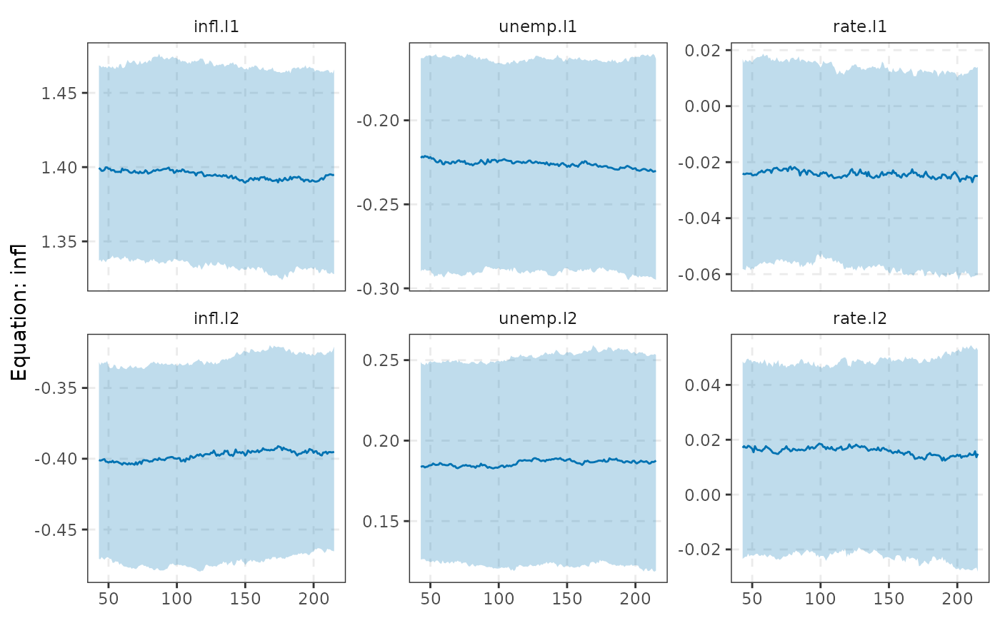

tidy() summarises the posterior paths through time as a tibble:
type = "coef" gives date, response (equation), term, estimate
(posterior median), conf.low, conf.high; "vol" and "shock_vol" give
date, variable, estimate, conf.low, conf.high for the reduced-form
residual and the orthogonalised shock standard deviations
(tvp_volatility()). glance() is a one-row summary.
Usage
# S3 method for class 'tvpvar'
tidy(
x,
type = c("coef", "vol", "shock_vol"),
equation = NULL,
level = 0.68,
const = TRUE,
...
)
# S3 method for class 'tvpvar'
as_tibble(x, ...)
# S3 method for class 'tvpvar'
glance(x, ...)
# S3 method for class 'tvpvar'
autoplot(
object,
type = c("coef", "vol", "shock_vol", "irf"),
equation = NULL,
level = 0.68,
const = FALSE,
shock = NULL,
response = NULL,
horizon = c(0L, 4L, 8L),
...
)
# S3 method for class 'tvpvar_path'
autoplot(object, ...)
# S3 method for class 'tvpvar'
plot(x, ...)
# S3 method for class 'tvpvar_path'
plot(x, ...)Arguments
- x, object
a
tvpvar()fit.- type
"coef","vol","shock_vol"(and"irf"forautoplot()).- equation
<
tidy-select> equation(s) fortype = "coef".tidy()defaults to all,autoplot()to the first.- level
credible level of the band.
- const
include the intercept path (
type = "coef").- ...
unused (
plot()passes them toautoplot()).- shock, response
<
tidy-select> variables of the response shown bytype = "irf".- horizon
horizons of the response shown by
type = "irf".
Value
tidy(), glance(): a tibble; autoplot(): a ggplot.
Details
autoplot() draws the paths with their credible band (type = "coef",
"vol", "shock_vol") or the response of response to shock through time
at the given horizons (type = "irf", via irf_path()).
See also
Other TVP-VAR:
irf_path(),
tvp_dynamics,
tvp_prior(),
tvp_volatility(),
tvpvar()
Examples
# \donttest{
fit <- tvpvar(yraw, p = 2, ndraw = 200, nburn = 200)
tidy(fit, "vol")
#> # A tibble: 519 × 5
#> date variable estimate conf.low conf.high
#> <int> <fct> <dbl> <dbl> <dbl>
#> 1 43 infl 0.234 0.181 0.303
#> 2 44 infl 0.240 0.183 0.305
#> 3 45 infl 0.241 0.180 0.299
#> 4 46 infl 0.242 0.180 0.295
#> 5 47 infl 0.247 0.188 0.308
#> 6 48 infl 0.245 0.192 0.303
#> 7 49 infl 0.244 0.194 0.306
#> 8 50 infl 0.248 0.196 0.311
#> 9 51 infl 0.251 0.199 0.305
#> 10 52 infl 0.253 0.209 0.311
#> # ℹ 509 more rows
autoplot(fit, "coef", equation = infl)

# }